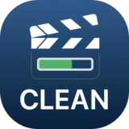

Requisiti minimi: macOS 26 Tahoe • Apple Silicon
L'app analizza i video, rimuove i frame duplicati e genera un file pulito a FPS costante esportato in ProRes 422 HQ. I video a FPS variabile (VFR) non sono supportati.
Sono disponibili due modalità di esportazione video:
• Retime: mantiene lo stesso framerate e gli stessi frame effettivi del video originale, quindi la durata finale diminuisce.
• Reframe: mantiene la stessa durata e gli stessi frame effettivi del video originale, quindi il framerate finale diminuisce.
A ogni modalità video si può associare una modalità di esportazione audio:
• Adata
Con Retime l'audio viene velocizzato per adattarsi alla nuova durata del video.
Con Reframe l'audio viene mantenuto così com'è, perché ha già la durata corretta.
• Taglia
Viene creato un "audio pulito" rimuovendo le parti corrispondenti ai frame duplicati.
Con Retime questo audio viene mantenuto così com'è.
Con Reframe viene rallentato per adattarsi alla durata del video.
• Focus
Viene creato un "audio focus" rimuovendo le parti corrispondenti ai frame duplicati.
Negli intervalli in cui viene rilevato uno slow motion, l'audio viene velocizzato invece di essere tagliato.
L'app riconosce slow motion 0,5x e 0,25x, applicando rispettivamente accelerazioni 2x e 4x.
Con Retime questo audio viene mantenuto così com'è.
Con Reframe viene rallentato per adattarsi alla durata del video.
Basta trascinare un video nell'app, scegliere la modalità video e la modalità audio desiderata, quindi avviare l'elaborazione.
CleanFPS identifica i frame duplicati, ricostruisce il video pulito e genera un file ProRes 422 HQ coerente con le impostazioni selezionate.
Versione: 05-05-2026
Scarica per macOSL'app non è firmata con certificato Apple. macOS bloccherà il primo avvio. Segui le istruzioni incluse nello ZIP per aprirla.